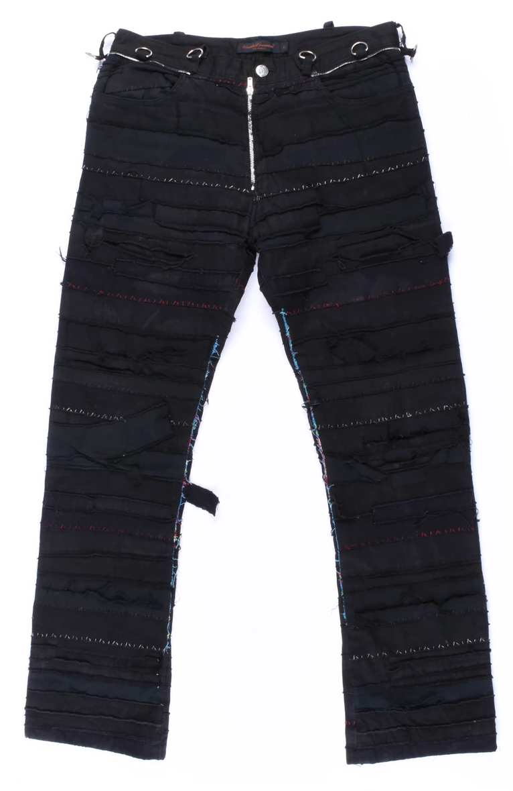
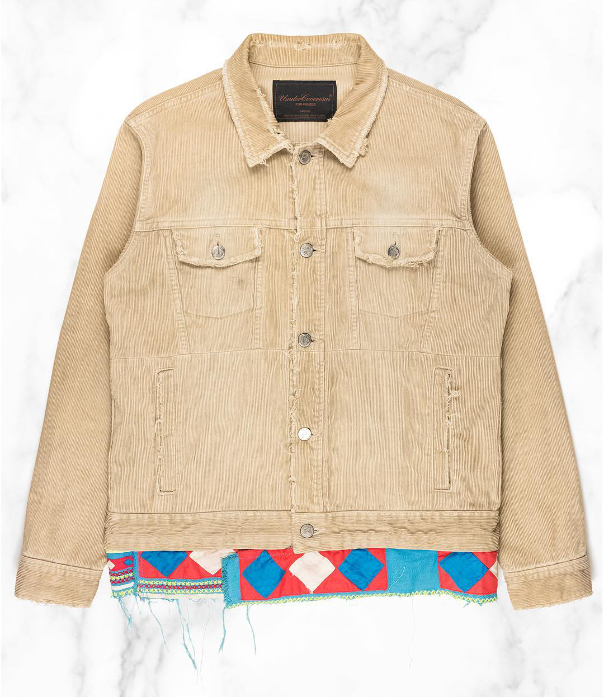
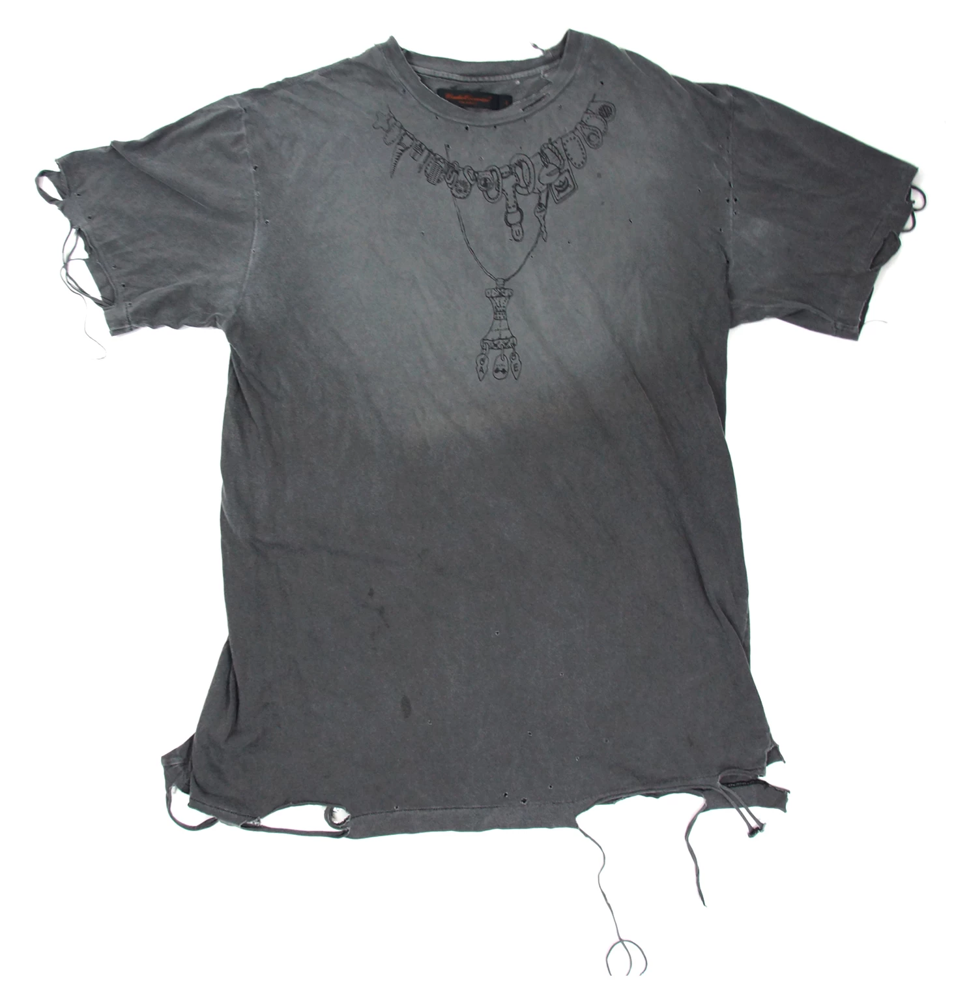

Nearly 10 years after the inception of Undercover, Takahashi made the pilgrimage to Paris to show his Spring Summer 2003 collection, titled “Scab”. Coincidental with the new stage, Scab is often cited as Takahashi’s best work by Undercover fans. With this, Undercover is often credited with having the best Paris Fashion Week debut of any label to ever grace the stage. With the new found buzz around Undercover, Takahashi had solidified his edgy-punk style in the fashion world (Silver League, “Corduroy Trucker Jacket”).
SS03 Scab Denim from God on Grailed.
As seen in these jeans, a reoccurring pattern in Scab was overlock stitching and heavy patchworking. Like many other pieces from Scab, these pants were re-imagined by Takahashi in later seasons. These being the original versions, they can fetch up to $1,500 on the resale market depending on the size and condition.
SS03 Corduroy Trucker Jacket from Silver League.
With this corduroy trucker jacket, more key elements of Scab can be seen. The tribal print fabric around the waist hem was heavily used throughout the collection to add hints of color to the garments. Frayed edges and factory distressing also add to the aggressive undertone that Scab possesses.
SS03 Rosary Tee from groupie on Grailed.
The Rosary tee is incredibly popular among Undercover archivists. It also saw several different iterations in the following seasons. These versions include the 'Giz' and 'No Gods No Masters' tees.
Back to Top